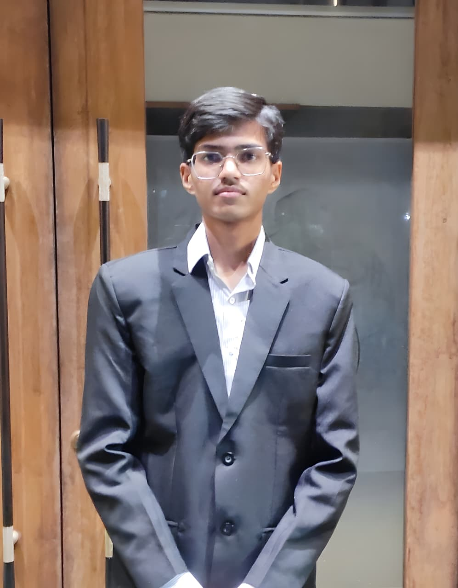
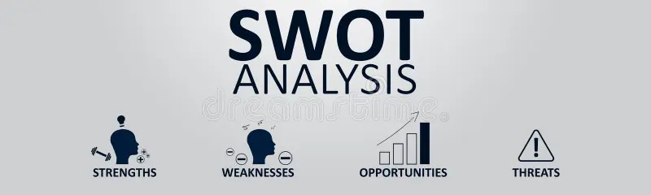
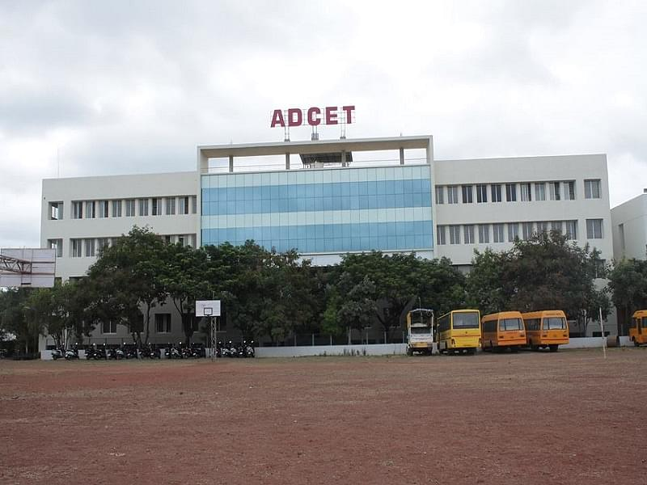
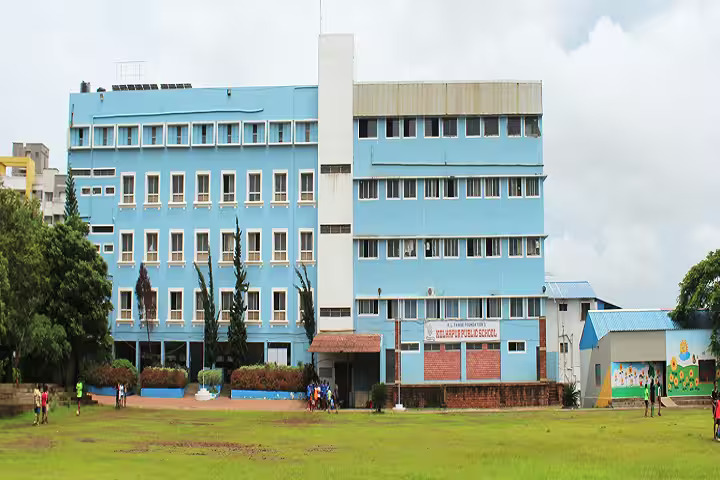
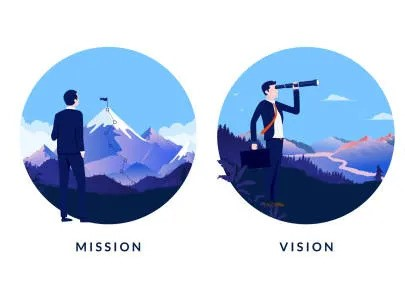
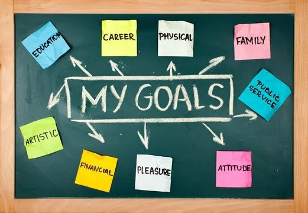
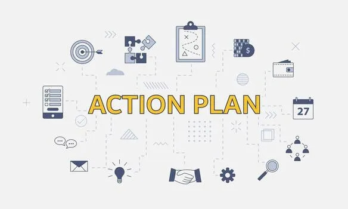
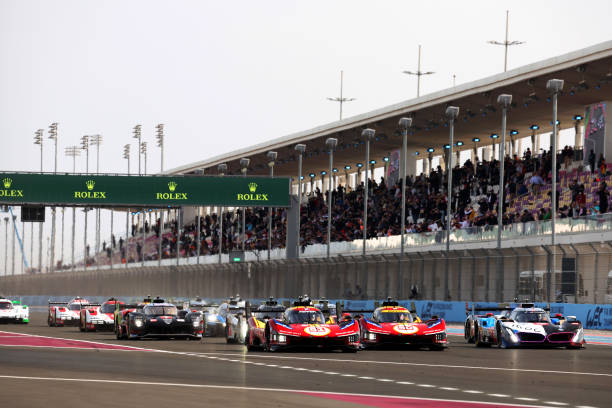

About Me

Hello, I’m Aryan Mahashikare, a first-year Computer Science Engineering student at ADCET who loves to learn how things work and create cool stuff through code. I’m always exploring new technologies and improving my skills with small projects. This portfolio is my first step toward growing as a developer.
Check out SWOT here.
SWOT

Everyone has their own strengths and weaknesses. Speaking of my strengths, my English speaking skills are good. Another strength is determination, whenever I decide to do or learn something, I will do my best to finish it quickly and properly. I also understand things quickly, which helps me to learn more things in less time.
I also recognize the weaknesses I have, my biggest weakness is procrastination, I a lot of the times feel like I can manage the work later but it doesn't happen. Another weakness would be my communication skills and stage fear. I hesitate to talk with new people or speak in front of a crowd. These weaknesses will definitely affect my growth but I will give my best to overcome these weaknesses.
Opportunities don’t always come back once missed, so I’ve learned to stay attentive of these opportunities and make the most of them. Nowadays, finding new opportunities has become a lot easier due to internet. There are various online courses and contests I can take part in and improve my skills. Taking these opportunities at the right time can really help me in achieving my goals.
The threat I have is that nowadays, because of online platforms, education has become much more accessible and competition is increasing every day. Social media also acts as a big distraction. Every minute I spend getting distracted takes me away from what I’m supposed to do, and in that time someone else might move ahead of me. So, I need to stay focused and keep working hard, as my biggest threat is the people I’m competing with for my career.
Check out my Education details here.
Education

B.Tech (Computer Science) [2025-Present]

I am currently pursuing my B.Tech degree in Computer Science at Annasaheb Dange College of Engineering and Technology, Ashta, beginning in 2025. I secured admission through the MHT-CET examination with an 86.9 percentile and am in the first year of my engineering journey, building a strong foundation in core computer science subjects.
Higher Secondary Education [2023-2025]
From 2023 to 2025, I studied at Chate Junior College of Science, Kolhapur, where I completed my 11th and 12th in the Science stream. I successfully completed my higher secondary education with 60% overall.
Schooling [2013-2023]

I completed my schooling from 1st to 10th standard at Kolhapur Public School, Kolhapur, between 2013 and 2023. Following the CBSE curriculum, I achieved 95.4% in my Class 10 board examinations.
Check out my Vision and Mission here.
Vision and Mission

Vision
To become a skilled software developer who builds reliable, impactful applications and later explore game development to combine creativity and technology in delivering immersive gaming experiences.
Mission
To continuously improve my programming and problem-solving skills while learning emerging technologies. I aim to apply my knowledge in real-world projects, contribute to innovative software, and gradually transition into developing engaging and meaningful games.
Check out my Goals here.
My Goals

Short Term Goals (1-3 Years)
Strengthen my foundation in programming languages such as C, C++, Python, and Java.
Build personal and academic projects to gain practical experience.
Learn the basics of game development tools like Unity or Unreal Engine.
Participate in coding contests, hackathons, and workshops.
Obtain an internship in the field of software development.
Long Term Goals (4-5+ Years)
Establish a strong career as a professional software developer.
Develop and publish independent or collaborative game projects.
Gain expertise in game design, graphics, and interactive systems.
Continue learning advanced technologies and contribute to impactful projects in both software and gaming industries.
Check out my Action Plan here.
Action Plan

Follow a structured learning and coding schedule to improve consistency.
Take relevant online courses and certifications in software and game development.
Create a portfolio of projects on platforms like GitHub to showcase skills.
Collaborate with peers and mentors to learn teamwork and project management.
Stay updated with industry trends and continuously refine technical and creative skills.
Check out my Hobbies here.
Hobbies
I have a huge interest in motorsports and enjoy watching races to understand driving techniques, racing strategies, and vehicle dynamics.

I also like sim racing, where I use my PC and a remote setup to experience the excitement of racing virtually and improve my understanding of real-world racing concepts. In my free time, I enjoy playing Minecraft with friends, as it allows me to be creative, collaborate, and unwind through fun and interactive gameplay.
Check out My Ideal here.
My Idol

My idol is Max Verstappen, a Formula 1 driver known for his exceptional skill, determination, and confidence on track. I admire how he focuses entirely on performance and lets his results speak for themselves, rather than engaging in unnecessary attention or talk. His calm mindset, consistency, and ability to deliver under pressure inspire me to stay dedicated to my goals and keep improving, no matter how challenging things get.